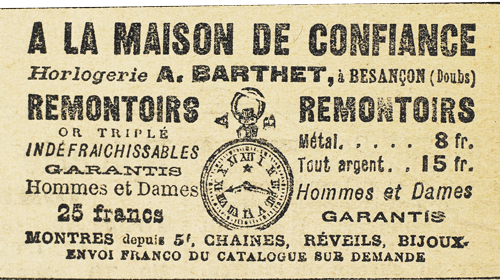

Il avançait cependant, pas à pas, et, à mesure qu’il avançait, le même tertre prenait une apparence qui n’était point conforme à ce qu’attendait Raoul. Nulle pierre plus haute… Nul sommet qui pût jadis permettre à celle qu’on appelait la Dame de Beauté de venir s’asseoir et de guetter au tournant du fleuve l’arrivée des barques royales. Rien de saillant. Au contraire… Que s’était-il donc produit ? Quelque crue subite du fleuve, ou quelque orage avait-il récemment modifié ce que les intempéries séculaires avaient respecté ? Ou bien…
En deux bonds, Raoul franchit les dix pas qui le séparaient de la butte.
Un juron lui échappa. L’affreuse vérité s’offrait à ses regards. La partie centrale du monticule était éventrée. La borne, la borne légendaire était bien là, mais disjointe, brisée, morcelée, ses débris rejetés aux pentes d’une fosse béante où se voyaient des cailloux noircis et des mottes d’herbe brûlée qui fumaient encore. Pas une pierre précieuse. Pas une parcelle d’or et d’argent. L’ennemi avait passé…
En face de l’effroyable spectacle, Raoul ne demeura certes pas plus d’une minute. Immobile, sans une parole, il avisa distraitement, et releva machinalement tous les vestiges et toutes les preuves du travail effectué quelques heures auparavant, aperçut des empreintes de talons féminins, mais refusa d’en tirer une conclusion logique. Il s’éloigna de quelques mètres, alluma une cigarette et s’assit au revers de la digue.
Il ne voulait plus penser. La défaite, et surtout la façon dont elle lui avait été infligée, était trop pénible pour qu’il consentît à en étudier les effets et les causes. En ces cas-là, on doit s’exercer à l’indifférence et au sang-froid.
Mais les événements de la veille et de la soirée précédente, malgré tout, s’imposaient à lui. Qu’il le voulût ou non, les actes de Joséphine Balsamo se déroulaient dans son esprit. Il la voyait se raidissant contre le mal et recouvrant toute l’énergie nécessaire en un pareil moment. Se reposer, quand l’heure du destin sonnait ? Allons donc ? Est-ce qu’il s’était reposé, lui ? Et Beaumagnan, si meurtri qu’il fût, s’était-il accordé le moindre répit ? Non, une Joséphine Balsamo ne pouvait commettre une telle faute. Avant que la nuit fût tombée, elle arrivait dans cette même prairie avec ses acolytes, et, en plein jour, puis à la lueur de lanternes, elle dirigeait les travaux.
Et quand, lui, Raoul, il l’avait devinée, derrière les vitres voilées de sa cabine, elle ne se préparait pas à l’expédition suprême, mais elle en revenait, une fois de plus victorieuse, parce qu’elle ne permettait jamais aux petits hasards, aux vaines hésitations et aux scrupules superflus, de faire obstacle entre elle et l’accomplissement immédiat de ses projets.
Plus de vingt minutes, se délassant de sa fatigue au soleil qui surgissait des collines opposées, Raoul examina l’âpre réalité où sombraient ses rêves de domination ; et il fallait qu’il fût bien absorbé pour ne pas entendre le bruit d’une voiture qui s’arrêta dans le chemin, et pour ne voir les trois hommes qui en descendirent, qui soulevèrent la perche et traversèrent la prairie, qu’au moment où l’un d’eux, arrivé devant la butte, poussait un cri de détresse.
C’était Beaumagnan. Ses deux amis, d’Étigues et Bennetot, le soutenaient.
Si la déception de Raoul avait été profonde, quel ne fut pas l’accablement de l’homme qui avait joué toute sa vie sur cette affaire du trésor mystérieux ! Livide, les yeux hagards, du sang sur le linge qui bandait sa blessure, il regardait stupidement comme le plus affreux des spectacles le terrain dévasté où la pierre miraculeuse avait été violée.
On eût dit que le monde s’effondrait devant lui et qu’il contemplait un gouffre plein d’épouvante et d’horreur.
Raoul s’avança et murmura :
– C’est elle.
Beaumagnan ne répondit pas. Pouvait-on douter que ce fût elle ? Est-ce que l’image de cette femme ne se confondait pas avec tout ce qui était ici-bas désastre, bouleversement, cataclysme, souffrance infernale ? Avait-il besoin, comme le firent ses compagnons, de se jeter à terre et de fouiller dans le chaos pour y découvrir une parcelle oubliée du trésor ? Non ! non ! après le passage de la sorcière, il n’y avait plus que poussière et que cendre ! Elle était le grand fléau qui dévaste et qui tue. Elle était l’incarnation même du Satan. Elle était le néant et la mort !
Il se dressa, toujours théâtral et romantique en ses attitudes les plus naturelles, promena autour de lui des yeux douloureux, puis, subitement, ayant fait un signe de croix, il se frappa la poitrine d’un grand coup de poignard, de ce poignard qui appartenait à Joséphine Balsamo.
Le geste fut si brusque et si inattendu que rien n’eût pu le prévenir. Avant même que ses amis et que Raoul eussent compris, Beaumagnan s’écroulait dans la fosse, parmi les débris de ce qui avait été le coffre-fort des moines. Ses amis se précipitèrent sur lui. Il respirait encore, et il balbutia :
– Un prêtre… un prêtre…
Bennetot s’éloigna en hâte. Des paysans accouraient. Il les interrogea et sauta dans la voiture.
À genoux, près de la fosse, Godefroy d’Étigues priait et se frappait la poitrine… Sans doute Beaumagnan lui avait-il révélé que Joséphine Balsamo vivait encore et connaissait tous ses crimes. Cela, et le suicide de Beaumagnan le rendaient fou. La terreur creusait son visage.
Raoul se pencha sur Beaumagnan et lui dit :
– Je vous jure que je la retrouverai. Je vous jure que je lui reprendrai les richesses.
La haine et l’amour persistaient au cœur du moribond. Seules de telles paroles pouvaient prolonger son existence de quelques minutes. À l’heure de l’agonie, dans l’effondrement de tous ses rêves, il se rattachait désespérément à tout ce qui était représailles et vengeance.
Ses yeux appelaient Raoul qui s’inclina davantage et entendit le bégaiement :
– Clarisse… Clarisse d’Étigues… il faut l’épouser… Écoute… Clarisse n’est pas la fille du baron… il me l’a avoué… c’est la fille d’un autre qu’elle aimait…
Raoul prononça gravement :
– Je vous jure de l’épouser… je vous le jure…
– Godefroy… appela Beaumagnan.
Le baron continuait à prier. Raoul lui frappa l’épaule et le courba au-dessus de Beaumagnan qui bredouilla :
– Clarisse épousera d’Andrésy… je le veux…
– Oui… oui…, fit le baron, incapable de résistance.
– Jure-le.
– Je le jure.
– Sur ton salut éternel ?
– Sur mon salut éternel.
– Tu lui donneras ton argent pour qu’il nous venge… toutes les richesses que tu as volées… Tu le jures ?
– Sur mon salut éternel.
– Il connaît tous tes crimes. Il en a les preuves. Si tu n’obéis pas, il te dénoncera.
– J’obéirai.
– Sois maudit, si tu mens.
La voix de Beaumagnan s’exhalait en souffles rauques où les mots devenaient de plus en plus indistincts. Couché près de lui, Raoul les recueillait avec peine.
– Raoul, tu la poursuivras… il faut lui arracher les bijoux… C’est le démon… Écoute… J’ai découvert… au Havre… elle a un bateau… le Ver-Luisant… Écoute… Il n’avait plus la force de parler. Cependant, Raoul entendit encore :
– Va-t’en… tout de suite… cherche là… dès aujourd’hui…
Les yeux se fermèrent.
Le râle commençait.
Godefroy d’Étigues ne cessait de se marteler la poitrine, à genoux au creux de la fosse.
Raoul s’en alla.
Le soir, un journal de Paris publiait en dernière heure :
« M. Beaumagnan, avocat bien connu dans les cercles militants royalistes, et dont on avait déjà, par erreur, annoncé la mort en Espagne, s’est tué ce matin au village normand de Mesnil-sous-jumièges, sur les bords de la Seine.
« Les raisons de ce suicide sont absolument mystérieuses. Deux de ses amis, MM. Godefroy d’Étigues et Oscar de Bennetot, qui l’accompagnaient, racontent que cette nuit ils couchaient au château de Tancarville où ils étaient invités pour quelques jours, lorsque M. Beaumagnan les réveilla. Il était blessé et dans un état d’agitation extrême. Il exigea de ses amis qu’on attelât et qu’on se rendît aussitôt à Jumièges, et de là au Mesnil-sous-Jumièges. Pourquoi ? Pourquoi cette expédition dans une prairie isolée ? Pourquoi ce suicide ? Autant de questions auxquelles il leur est impossible de rien comprendre. »